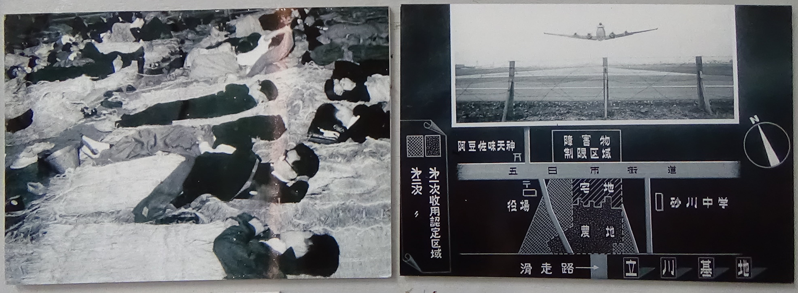

アメリカ人研究者がJapan Timesに書いた「砂川闘争」
「砂川闘争」が日本中の米軍基地反対運動に火をつけた
Japan Times 2015年5月3日 ダスティン・ライトDustin Wright
'Sunagawa Struggle' ignited anti-U.S. base resistance across Japan | The Japan Times
この記事を書いた2015年当時、ダスティン・ライトはカリフォルニア大学サンタクルーズ校で博士論文を仕上げ中で、翌年には同校で日本史を教えることになっていた。
同年6月には砂川平和ひろばを訪れている。
現在は、カリフォルニア州立大学モントレー・ベイ校で教鞭をとりながら、砂川闘争をはじめ沖縄や日本各地の米軍基地反対闘争、日本の社会運動史などを研究し続けている。
以下は、日本の英字新聞『ジャパン・タイムズ』に掲載された ダスティン・ライトによる記事の全訳である。
1955年5月4日、東京郊外の砂川に黒塗りの車がやって来て、史上最大級の米軍基地反対運動が燃え上がった。その車が停まったのは砂川町長宅の前。彼は町長選に勝利したばかりで地域の人々とお祝いをしているところだった。
東京調達局立川事務所の係官がその家に入ったとき、宴会中の人々はてっきりお祝いに駆けつけた人かと思った。そうではなかった。
「実は」と係官は言った。「立川基地がまた拡張されますので、なんとか皆さんにご協力いただけると誠にありがたいのですが」。
彼は車にもどり、去って行った。それから何週間もしないうちに、何百人という人々が基地の有刺鉄線の前に集まり抗議の声を上げ、その運動を「砂川闘争」と呼んだ。1959年までの間、在日米軍基地はまるで余命いくばくもないかのように思われた。
砂川は東京都の北にある小さな町で、中央線で新宿からわずか30分の所にある。米軍立川基地の主要な滑走路は、他の日本の滑走路と同じように、冷戦時代の戦闘機には短かすぎた。米軍としては、滑走路を北に延長したかったが、それは砂川の心臓部を貫くことだった。
日本政府は米軍基地の担当官から、滑走路の土地を確保するために砂川の140世帯を自宅と農地から立ち退かせるようにとの指令を受けた。農民にとっては、自分たちが失う土地をめぐって調達局から妥当な額を支払ってもらうための交渉、というような単純な問題ではなかった。土地を失うことは、いきなり生活と歴史を失うということだ。多くの地元民にとって、砂川における家族のつながりは江戸時代初期にまで遡る。
戦後の砂川は、東京の郊外の多くがそうであったように、戦争と占領の年月を経て、なんとか足元を固めようとしている頃だった。かつては帝国陸軍の飛行場だった立川基地とその周縁の町村では、米軍による空襲が激しかった。戦争が終わると、米軍は立川基地を、アメリカの空軍基地と極東司令本部にとっての中心拠点へと転用した。
基地は地勢的に圧倒的な存在であり、地元住民に占領がまだ、本当には、終わっていないことを思い起こさせた。1950年代、立川駅北口を出ると、まず出迎えるのが基地の正門で、周辺にはバーとキャバレーが並び、アメリカ人兵士や日本人職員が出入りしていたことだろう。立川上空に出没する戦闘機の耳をつんざくような轟音からは、逃れようもなかったはずだ。
基地の産業公害のように、砂川闘争の背後にある根深い反基地感情は、何年にもわたって、その町の隅々にまで浸透していた。かつて立川は、多くの人々にとって「闇市とドラッグの都市」として知られ、東アジア最悪の汚名を着せられた基地の街だった。1950年代初期、立川には5000人のセックスワーカーがいたと言われ、生計を立てるために危険な容赦ない郊外の風景のなかで先を争っていた。
立川の井戸はガソリンと油で汚染がひどく、多くの井戸が実際に燃焼するほどだった。地元の銭湯に行くと吐き気をもよおした。豆腐店やクリーニング店ほか、きれいな水が頼りの商売をする店は失業した。基地の正門周辺では、井戸の80％が汚染され、飲料水はトラックで運び込まれなければならなかった。基地をとり囲む生活空間の多くが、居住不可能となった。
それから、事故もあった。1953年6月18日の夕刻、アメリカ空軍のC-124グローブマスターが立川を離陸後まもなく西瓜畑に墜落し、韓国に行くために乗っていた129人全員が死亡した。1955年9月20日、砂川闘争が急速に高まっていた頃、もう一機が西東京の空から消え、このときは八王子に落ちた。このジェット機は農地に墜落して４人が死亡した。
砂川に住む人々には、基地拡張に終わりはなさそうだと思われた。それは、都市化が進む時代には特に耐えがたいことだった。1945年から1955年までの間に、砂川の人口は42%増加して12000人を超え、世帯数は35％増となっていた。同じ期間に、アメリカ軍は立川基地の規模を4倍にも拡大していた。
東京自体がそうであったように、基地は、抑制不能な成長イデオロギーにとらわれたかのような機関である。調達局から黒塗りの車が砂川にやって来て、またしても地元住民に土地と暮らしを引き渡せと要求したとき、町民のほとんどが、基地拡張も補償金交渉も徹底的に拒否するしかない、と感じた。
闘争の初期に地元農家は――祖父母や子供の世代も含めて――「土地に杭は打たれても、心に杭は打たれない」と叫んで、土地測量隊が拡張予定地に「立入禁止」の標識を立てようとするのを阻止した。測量隊がトラックに乗って到着すると、抗議の人々は行く手に座り込んで彼らがトラックから降りて来られないようにした。
地元住民は素早く「砂川基地拡張反対同盟」を結成した。1955年の夏、社会党の議員や地元および全国の労働組合と学生集団が加わって、反対同盟は急速に拡大した。
政治的に無力な人々から土地を要求する政府のやり方に、多くの支援労組員が幅広く反対した。国立村山病院は砂川から北へわずか2キロ、米軍戦闘機の飛行経路の真下に位置するが、そこの組合は支援者に砂川闘争に参加するよう呼びかけた。病院の医師たちは、患者たちが不眠や不安症、また高血圧・息苦しさなどのストレス増加兆候を示していることに気づいた。屋根の上を飛ぶジェットエンジンの爆音のせいだ、と彼らは語った。

抗議する者たちを追い出すために、政府はより多くの警官を送り込んだ。抗議運動はますます大きくなった。大学生たちは東京から砂川に行って、昼は人間バリケードとなり、夜は地元の中学校の床で寝た。
1956年の秋までに、大勢の人々が砂川の農地で泥まみれの激戦を戦っていた。10月には2000人の警官が、居座る農民たちをその土地から追い立てるよう命じられたが、反対勢力6000人に迎えられ、その結果生じた激突でおよそ1000人が負傷し、多数が重傷を負った。
1957年、また別の大衆抗議で、スクラムを組んでいたデモ隊が有刺鉄線に押し寄せて基地内に入り込んだ。結局7人が逮捕され、侵入の罪に問われた。この事件は東京地方裁判所で判決が下され、有罪は米軍基地そのものであるという、多くの人々に衝撃的なものだった。伊達秋雄裁判長は、「わが国における米国の軍隊の駐留は憲法のもとで許されるとは言い難い」と論じたのである。
基地が憲法第9条に違反するとの判決は、米軍にとっても政府自民党にとっても悪夢であり、両者は最高裁に対して、伊達判決を覆すよう圧力をかけた。最高裁はただちに応じた。しかし手遅れだった。砂川闘争と伊達判決は、アメリカによる日本の地の軍事化という、当時も、そして今なお、日米安全保障条約の中枢部分に、強力な一撃を与えたのである。
歴史学者の荒川章二は、「砂川闘争という強烈な反基地運動の結果として、安保条約改定をめぐる政治抗争や社会の分断との相乗効果もあり、安保条約自体が法廷における争点となった。そのことをとおして、憲法９条の役割と意義と解釈が、厳密に探求されなければならなくなった」。砂川の農民たちがいなければ、60年安保闘争は全く別なものになっていただろう。
アメリカ軍が、予定していた滑走路の拡張を断念すると控えめに発表したのは、1968年の冬になってからだった。1977年には、米軍基地を日本の主権のもとに返還した。
砂川闘争は、今の日本でアメリカの軍事基地に抵抗して闘う人々にとって、どのような意味をもつのか？ 砂川闘争が、辺野古、岩国、京丹後、横須賀などで、軍国主義と土地の没収に反対して抗議し続ける日本じゅうの闘いと、重なり合うことに気づく読者も多いだろう。こうした反基地闘争にとって、勝利とは何なのだろうか？
小さな町の農民と支援者を核とする小集団によって米軍からもぎとられた立川空軍基地は、今では陸上自衛隊立川駐屯地と昭和記念公園に占拠されている。おそらく勝利とは、主観的なものなのだ。
{kind=link}